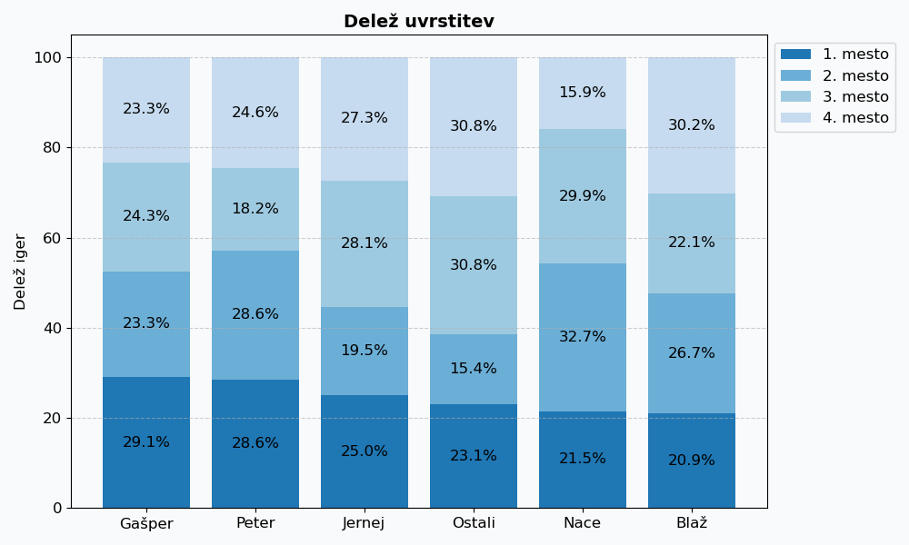
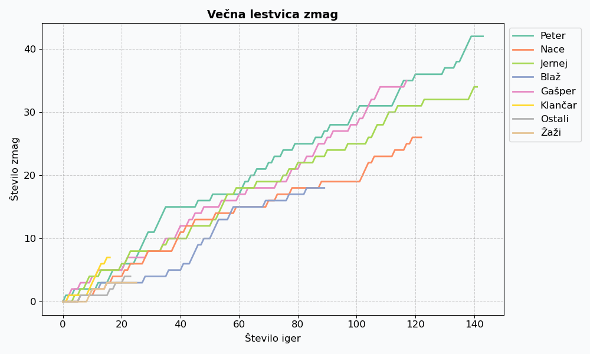

Tarok je priljubljena in kompleksna igra s kartami, ki zahteva tako strateško razmišljanje, kot tudi dobro sodelovanje
med igralci. Njena zgodovina sega več stoletij nazaj, danes pa ostaja priljubljena družabna igra med prijatelji.
V tem delu bomo predstavili analizo igranja taroka med skupino prijateljev, po več tisoč odigranih rundah taroka.
Najprej bomo dobro definirali pomembne pojme, ki jih bomo pogosto uporabljali. Nato bomo predstavili trenutne rezultate
v obliki večne lestvice točk in deleža zmag posameznika. Na koncu pa bomo predstavili še igralce, ki v igrah
sodelujejo in analizirali njihove strategije.
Definicije
Runda taroka je najmanjša osnovna enota taroka, ki jo sestavljajo deljenje kart, licitacija ter igranje.
Na koncu posamezne runde se igralcem, ki igrajo, prištejejo (oziroma, zadnje čase vse pogosteje, odštejejo) točke.
Igra taroka je sestavljena iz več zaporednih rund, minimalno 10 in običajno ne več kot 40.
Na koncu igre se igralcem odštejejo kazni za neporabljene radlce, kdor ima po tem največ točk je zmagovalec igre.
Večna lestvica
Večna lestvica poleg uspešnosti odraža tudi mentalno vzdržljivost in stalno pripravljenost na igro. Ljudje, ki kar
naprej nekaj delajo in/ali imajo kar naprej neke načrte in so socialni, so tukaj v slabšem položaju. Brezdelneži in
zabušanti imajo po isti logiki prednost. Najboljše izhodišče za dober položaj na lestvici je entuziazem nad igranjem
taroka s prijatelji. Na vrhu večne lestvice trenutno kraljuje Peter, ki ima
37859 točk. Večno lestvico z več podrobnostmi vidimo v tabeli 1.
Igralec
Igre
Runde
Točke
na igro
Peter
126
2950
37859
12.8
Nace
107
2505
36142
14.4
Jernej
128
3081
33770
11.0
Blaž
86
2083
30866
14.8
Gašper
103
2492
28773
11.5
Ostali
10
298
3669
12.3
Klančar
12
233
3664
15.7
Žaži
20
398
1658
4.2
Mica
6
214
1173
5.5
Kocjančič
4
72
522
7.2
Ferjan
2
50
-3531
-70.6
Večna lestvica prikazuje število odigranih iger in rund ter skupno število dobljenih točk ter zmag.
Da pa lahko pravično primerjamo vse igralce in vidimo razvoj ter trende v njihovi igri, je na sliki 1 prikazano
skupno število točk vsakega igralca glede na število odigranih rund.
Graf večne lestvice skozi čas prikazuje število točk posameznega igralca, glede na število odigranih rund. Omogoča pravično primerjavo med igralci, ki igrajo manj iger z igralci, ki igrajo vsakič.
Število zmag
Zadnje čase se je med igralci razširila misel, da so pomembne samo zmage. V tej miselnosti je drugo mesto enakovredno
tretjemu in četrtemu. Oče in glavni predstavnik te ideologije Jernej Grlj je zaslovel z izjavo, ki ponazarja bistvo te
filozofije-Grljizma: “Če ne zmagam, zgubim!” Po Grljizmu so v ključnih trenutkih za zmago dovoljena vsa sredstva in vse
igre, ki bi lahko vodile do edinega cilja. Berači s preveč in solo 3 s premalo taroki, barvni valati s pomanjkanjem
barvitosti in presežno pisani solo brez-i. Če želi iti nekdo s prednostjo igrati ena, ti v ključnih trenutkih po naukih
Grljizma ostane le še mučno odločanje med solo 3 in beračem. Če kljub velikemu trudu tako željeni cilj ni dosežen, je
pravi odziv sprijaznitev z realnostjo, strnjen v še enem slavnem citatu: “Danes pač ni šlo.”
Delež zmag ter ostalih uvrstitev vsakega igralca vidimo na sliki 2. Največji delež zmag ima Gašper,
ki zmaga v kar 29.13 odstotkih iger, ki jih odigra.

Graf prikazuje delež uvrstitev posameznega igralca.
Trende igralcev prav tako lahko opazimo na sliki 3, kjer je prikazano število zmag posameznega igralca skozi čas.
Tu kraljuje Peter, ki je zmagal že 36 iger.

Graf prikazuje število zmag posameznega igralca, glede na število odigranih iger.
Zasedba
Peter
(falirani) študent kemije, član APZ TT, wikipedist, wannabe pisatelj, amaterski pianist
Gašper
študent fizike, zaposlen na kemijskem inštitutu, plezalec, kolesar, organizator košarke
Blaž
programer, amaterski pianist, organist in pevec ter lastnik discord serverjev
Nace
Študent računalništva in matematike, kolesar, vzdrževalec te spletne strani
Jernej
Študent matematike, zaposlen kot predavatelj na univerzi zraven Los Angelesa, pesnik, kolesar